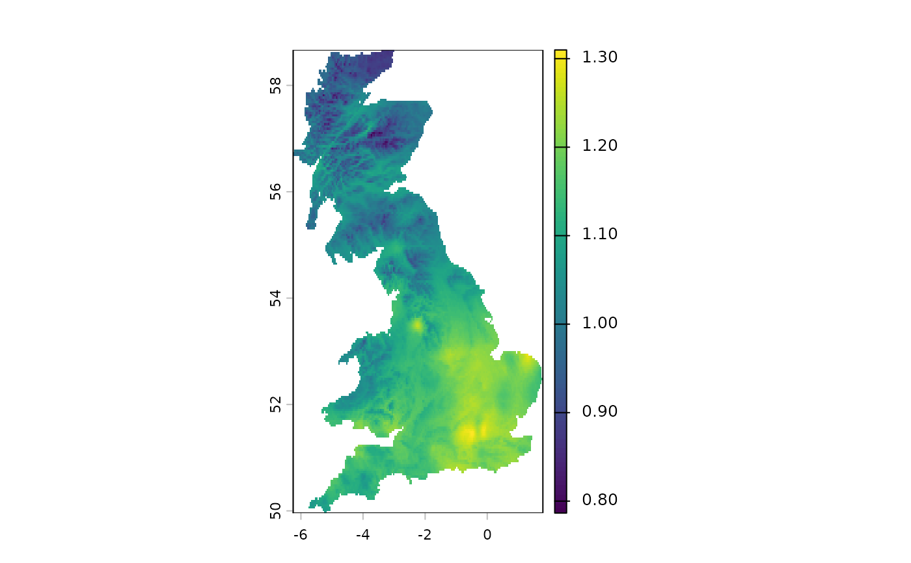

Find the distance to the closest feature-space values in another raster
Source:R/spq_proximity.R
spq_proximity.RdFor each cell in x, finds the minimum distance to any complete feature
vector in y. Raster geometry is not used in the calculation; the layers
of each raster represent the dimensions of a feature vector.
Usage
spq_proximity(
x,
y,
dist_fun,
output = c("distance", "id", "all"),
block_size = 100,
progress = TRUE,
dist_approx = FALSE,
eps = 0,
...
)Arguments
- x
An object of class SpatRaster (terra). Its cells define the query feature vectors and its geometry is retained in the result.
- y
An object of class SpatRaster (terra). Its cells define the reference feature vectors.
- dist_fun
Distance measure used. This function uses the same distance measures as
spq_search(), including measures fromphilentropy,proxy, and dynamic time warping throughdtwclust. Setdist_approx = TRUEwithdist_fun = "euclidean"to use an approximate Euclidean nearest-neighbour search.- output
Character string specifying the output:
"distance"returns the distance to the closest feature vector,"id"returns the 1-based cell ID of the closest cell iny, and"all"returns both as layers.- block_size
Number of rows from
xto process at once.- progress
Logical; show a progress bar while processing
x?- dist_approx
Logical; use an approximate nearest-neighbour method? Currently supported for
dist_fun = "euclidean"only.- eps
Non-negative, dimensionless relative approximation tolerance for approximate Euclidean search. For example,
eps = 0.1permits a result approximately up to 10 percent farther than the exact nearest distance. Larger values can be faster but less accurate. The default, zero, requests an exact nearest-neighbour search. It has no raster or feature-value units.- ...
Additional arguments for the selected distance backend. When
dist_fun = "dtw",ndimmust be supplied.
Value
An object of class SpatRaster (terra) with the same geometry as
x. It has one layer for output = "distance" or output = "id", and
two layers, named distance and id, for output = "all".
Examples
library(terra)
ta = rast(system.file("raster/ta_scaled.tif", package = "spquery"))
pr = rast(system.file("raster/pr_scaled.tif", package = "spquery"))
re = spq_proximity(
ta, pr, dist_fun = "euclidean", dist_approx = TRUE
)
#>
|
| | 0%
|
|======================= | 33%
|
|=============================================== | 67%
|
|======================================================================| 100%
plot(re)
